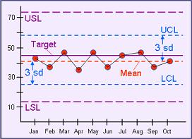

|
Control Charts
Manufacturing operations of technology companies employ complex
processes that need to be under strict
control
at all times. Controlling a process usually means maintaining its
output parameters to within certain
specifications
by providing it with the correct set of inputs. Unfortunately,
keeping the process inputs within their defined specifications is
not often enough to ensure that the output will always be good. Other
factors that were not initially considered in the design of the process
can come into play and degrade the performance of the process, even if
the inputs to the process follow the specifications.
Control
charting
is a technique for monitoring the performance of the process for any
signs of deterioration, so that actions may be taken before the process
gets out of control. This technique consists of plotting critical
process output parameters on
control
charts
at defined intervals, and analyzing the trends exhibited by the plots
for any abnormalities that need intervention.
A control
chart is used: 1) for presenting process performance in a quick
and easy-to-use visual format; 2) for monitoring process variation over
time; 3) for distinguishing out-of-control points due to special
assignable causes from variations due to common causes that are part of
the process; 4) for detecting abnormal trends and other tell-tale
signs of process anomaly; 5) as feedback for processes that are
undergoing improvements; and 6) as a common language for discussing
process performance.
Control
charting can not be applied to every process though. It can only be
implemented for processes that are already
stable,
and whose output data for charting constitute a normal distribution.
A stable process is one whose output data form a distribution with low
variation, i.e., the data have a low standard deviation. On the other hand, an
unstable process exhibits very large variation, i.e., the output data
have a high standard deviation.
The high variation of an
immature or unstable process is usually due to a number of extremely
high or extremely low points (known as
out-of-control points
or outliers)
caused by special random causes that are not part of the process itself. Such factors
must be minimized (if not eliminated) first, to yield output data that truly
reflect the inherent capability of the process, before control charting
is started. Doing so will ensure that the process under control
charting exhibits variation caused only by factors that are part of the
process itself.
There are many types of
control charts for both attribute and variable types of data.
However, the control chart used for individual
readings of variable data will be used in the following discussions
since it is one of the most extensively used control charts in
process engineering.
A completed
control chart has the following
parts: 1) an x-axis that shows the
points at which the parameter readings were collected; 2) a y-axis that
shows the parameter reading for each data collection point on the
x-axis; 3) a horizontal data average or process mean line; 4)
horizontal line(s) for the control limit(s); 5) horizontal line(s) for the specification limit(s); 5) a horizontal target
line lying exactly between the specification limit lines; and 6) the
plotted data. Figure 1 shows an example of a completed control
chart.
|
 |
|
Figure 1.
Example of a complete control chart |
To implement
control charting for a given process, the following steps are usually
taken:
1) identify
the process and/or equipment to be subjected to control charting;
2) identify
the process output parameter to be charted;
3) check the
chosen parameter's data if they constitute a
normal distribution;
4) determine
the sampling method and plan;
5) construct
the preliminary control chart indicating just the upper and lower
specification limits of the process;
6) conduct
the preliminary data collection to gather baseline data upon which the
characteristics of the control chart will be based;
7) calculate
the appropriate statistics and the control limits of the chart from the
initial data collected;
8)
complete the control chart by including the process mean and control
limit lines; and
9) initiate
the actual control charting.
The premise of control
charting is that the output data charted constitute a normal
distribution, which is a symmetrical bell-shaped distribution described
by two numbers: its
center
(the mean of the data) and its
spread.
The spread of a normal distribution on the left of its center is equal
to that on the right. For the purpose of control charting, this
spread on either side is equal to
3 standard deviations,
such that data falling outside 3 standard deviations on either side are
considered outliers.
Thus, referring to Figure 1
again, the process mean line of a control chart is a horizontal line
whose y-coordinate is equal to the mean of the charted data. The
upper/lower control limit lines (UCL and LCL) are the horizontal lines
whose y-coordinates are equal to the mean of the charted data plus/minus
3 times the standard deviation of the charted data, respectively, or:
UCL
= Mean + 3 Stdev and
LCL =
Mean - 3 Stdev.
Note that the process mean line is exactly between the control limit
lines.
In further
reference to Figure 1, the lines for the upper and lower specification limits (USL and
LSL) of the control charts are simply the horizontal lines whose
y-coordinates are equal to the maximum and minimum output data allowed
by the process (oftentimes the customer specifications), while the target line is the horizontal line exactly
between these two specification limit lines.
Interpretation of control charts is not difficult. However, the
engineer has to be aware of the common guidelines used in control chart
interpretation. Some 'symptoms' that indicate that a process is
out of control
are: 1)
one or more points are outside the control limits; 2) nine (9)
consecutive points are on one side of the average; 3) six (6)
consecutive points are increasing or decreasing; and 4) fourteen (14)
consecutive points are alternating up and down. If any of these
out-of-control symptoms are observed, the engineer has to initiate an
out-of-control process investigation.
See Also:
SPC
HOME
Copyright
©
2004-2005
EESemi.com.
All Rights Reserved.
|